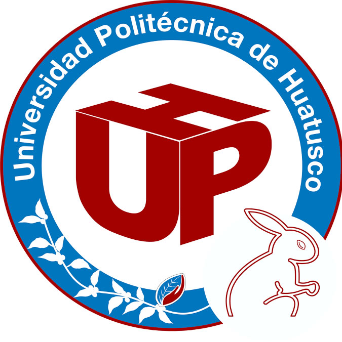

BIENVENIDOS Somos una institución pública perteneciente al sistema de educación tecnológica del estado de Veracruz, México, con más de 15 años de experiencia ofertando carreras con un modelo educativo basado en competencias. La Universidad Politécnica de Huatusco, fue creada para ofrecer programas educativos basados en competencias, las cuales consisten en desarrollar en el estudiante conocimientos y habilidades necesarios para enfrentar con éxito sus actividades profesionales; con una sólida formación científica, tecnológica y en valores cívicos, éticos y conscientes del contexto nacional e internacional en materia del medio ambiente, para el desarrollo económico y social de la región, del Estado y de la nación. Misión Formar profesionistas de acuerdo a un modelo educativo basado en competencias, desarrollando conocimientos, habilidades, actitudes y valores, a través de programas educativos pertinentes, orientados por personal docente y administrativo comprometido con el desarrollo sustentable, vinculados con proyectos de investigación, aplicada que impacten en el ámbito social, científico y tecnológico a nivel regional, nacional e internacional. Visión Ser una institución de excelencia que integre programas educativos de licenciatura y posgrado acreditados con reconocimiento a nivel nacional e internacional, así como cuerpos académicos consolidados en vinculación con el sector productivo y social, coadyuvando al desarrollo sustentable. Política de Calidad Somos una institución de educación superior responsable con la calidad educativa, comprometida con la igualdad laboral y la no discriminación, los valores y el respeto al ambiente, para la formación de profesionistas mediante la generación, aplicación y difusión del conocimiento, la investigación aplicada y la cultura; con una visión de mejora continua, sostenibilidad y prevención de la contaminación, asegurando el cumplimiento de la legislación aplicable. .
